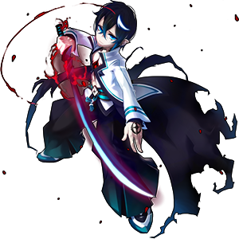

|
Uno
|
|
|
|
Informações Básicas
|
|
Raça
|
Highlander
|
|
Gênero
|
Masculino
|
|
Idade
|
Desconhecida
|
|
Altura
|
1.80 m
|
|
Classe
|
|
Sanguinário
|
|

|
|
|
Para evitar que os Highlanders
não pudessem atrapalhar seus
planos de se tornar o Deus Supremo
de Ernas, Astaroth econtrou suas
ruínas sagradas e exterminou o clã
inteiro.
Após, Astaroth usou um poderoso
fetiço para “congelar” o local e
selar as ruinas. E era ali que os
imortais realizavam o ritual para
ganhar seus poderes. Juntando as
energias do local do ritual, a magia
de Astaroth e o massacre que acabara
de acontecer, uma piscina de sangue
místico surgiu.
|
|
|
Esse sangue era
carregado de energia dos imortais
e de todos os sentimentos negativos
que se agarraram às suas almas na
hora em que foram mortos.
Desta mistura toda "nasceu" Uno,
sem pais para cuidar dele, sem entender
o que havia acontecido. Muito menos sem
saber por que havia nascido. Por sorte,
enquanto vagava sem rumo, foi encontrado
por uma garotinha chamada Reina, que o
levou a sua vila. Os habitantes de lá
começaram a tomar conta de Uno como se
ele fosse parte de toda a comunidade ali
pressente.
|
|
|
|
Ao recobrar
a consciência, Uno se deu conta
do massacre que havia cometidoe
que fez seus sentimentos negativos
aumentarem, agora com a presença
de um enorme pesar, um arrependimento.
Agora, tudo o que ele quer é conseguir
se livrar dessa sede incontrolável. E
ele acha que, para fazer isso, só uma
pessoa parecida com ele pode ajudá-lo.
|
|